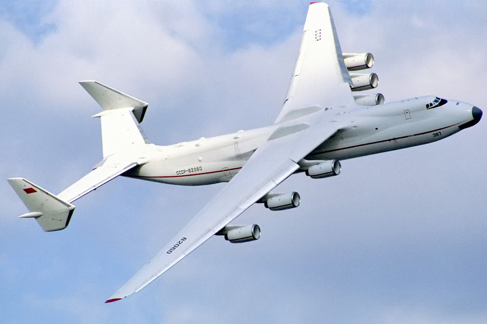
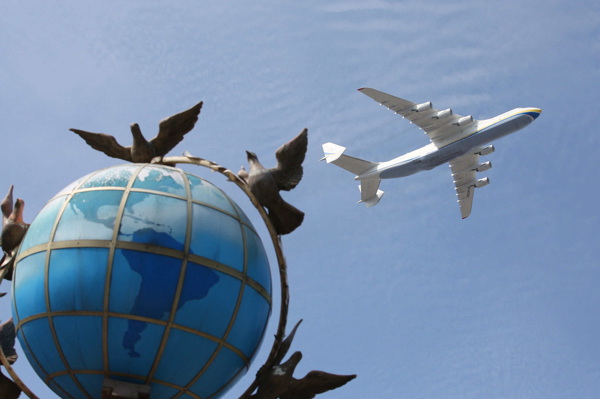

35 років тому Ан-225 «Мрія» вперше піднявся у небо і відтоді встановив понад 200 світових рекордів.
Літак Ан-225 «Мрія» вперше піднімається у небо зі службового заводського аеродрому «Святошин», 21 грудня 1988 року.
21 грудня 1988 року відбувся перший політ дослідного зразка найбільшого у світі транспортного літака Ан-225 «Мрія», створеного київським заводом «Антонов». Спочатку його будували для космічної галузі — він міг транспортувати ракети і слугувати «стартовим майданчиком» для космічних кораблів. Але СРСР розпався, а «Мрію» до кінця 1990-х законсервували в ангарі. На початку 2000-х її реконструювали та модифікували для перевезення надважких та надгабаритних вантажів, наприклад, локомотивів або багатотонних генераторів. А ще «Мрію» часто використовували, щоби оперативно доставити гуманітарні вантажі. Існував лише один екземпляр Ан-225. Але він уже увійшов в історію, встановивши близько 250 світових рекордів за швидкістю, висотою, вантажопідйомністю. Російські окупанти знищили «Мрію» в аеропорту Гостомель під Києвом у перші дні масштабного вторгнення в Україну.
Розробка літака розпочалася у 1985 році.
Головним конструктором проєкту був Віктор Толмачов. На фото: Генеральний директор Авіаційного науково-технічного комплексу імені О. Антонова Петро Балабуєв, який керував усіма розробками літаків серії Ан, демонструє макет Ан-225 під час пресконференції, 2 грудня 1988 року.
Розробку закінчили у рекордно короткий термін — за 3,5 роки.
На фото: Мітинг, присвячений завершенню будівництва літака Ан-225 «Мрія» на «Київському авіаційному виробничому обʼєднанні» (зараз Держпідприємство «Антонов»), листопад 1988 року. Основою для розробки нового літака став Ан-124 «Руслан» — до появи «Мрії», він був найбільшим літаком у світі. На фото: Літак Ан-225 «Мрія» в ангарі, 30 листопада 1988 року. «Мрія» досі залишається найбільшим транспортним літаком у світі. Ось деякі його характеристики: розмах крила — 88,4 метра, довжина — 84 метри, висота — 18,2 метра, вантажопідйомність — близько 250 000 кілограмів. На фото: Літак Ан-225 «Мрія» біля ангару, 30 листопада 1988 року. Уперше «Мрію» підняв у повітря екіпаж на чолі з пілотом-випробувачем Олександром Галуненком. На фото: Мітинг, присвячений першому випробувальному польоту літака Ан-225 «Мрія» на «Київському авіаційному виробничому обʼєднанні» (зараз Держпідприємство «Антонов»), 21 грудня 1988 року. Уперше «Мрію» підняв у повітря екіпаж на чолі з пілотом-випробувачем Олександром Галуненком. На фото: Мітинг, присвячений першому випробувальному польоту літака Ан-225 «Мрія» на «Київському авіаційному виробничому обʼєднанні» (зараз Держпідприємство «Антонов»), 21 грудня 1988 року.
Ан-225 спочатку створювали для радянської космічної галузі. Він міг не тільки перевозити на «спині» космічний корабель «Буран», але й слугувати «літаючим космодромом», з якого корабель міг стартувати на орбіту. У березні 1989 року «Мрія» з вантажем 156,3 тонни піднялася в повітря і за 3 години 45 хвилин польоту встановила 110 світових рекордів за швидкістю, висотою, вантажопідйомністю. На фото: Ан-225 «Мрія» на Міжнародній авіавиставці у Фарнборо, Велика Британія, 1990 рік. Європейське космічне агентство теж хотіло використати «Мрію» у якості «літаючого космодрому». На фото: Макет авіаційно-космічної системи, що включає літак «Мрія» та багаторазовий космічний апарат Interim HOTOL компанії «Брітіш Аероспейс», 1990 рік. Після розвалу СРСР 1991 року єдиний діючий екземпляр Ан-225 відправили до ангару. З нього зняли двигуни, щоб використати їх на літаках Ан-124 «Руслан». Тільки наприкінці 1990-х законсервований Ан-225 вирішили реконструювати та повернути у роботу для перевезення важких вантажів. Перший політ відновленої «Мрії» відбувся 7 травня 2001 року. Мрія» встигла побувати у багатьох країнах та на всіх континентах, окрім Антарктиди.
У січні 2002 року «Мрія» здійснила перший комерційний рейс. Відтоді літак часто використовують для доставки великогабаритних вантажів: локомотивів, багатотонних генераторів, довгих лопатей вітрогенератора. А ще «Мрію» часто використовували для оперативної доставки гуманітарних вантажів. Члени французької рятувальної команди вивантажують із «Мрії» 150 тонн гуманітарної допомоги постраждалим від землетрусу в Японії, 25 березня 2011 року. До того як росіяни знищили літак, Ан-225 «Мрія» продовжував ставити світові рекорди, їх назбиралося близько 250. На фото: «Мрія» пролітає над Хрещатиком у Києві під час параду до 30-річчя Незалежності України, 24 серпня 2021 року.